Protect people's health保护通行人员健康
Removing ultrafine engine particles where exposure is highest — inside the tunnel.在暴露浓度最高的隧道内部，直接去除超细发动机颗粒物。
Technology核心技术
Why road tunnels need purification — and what happens to the air inside a CTA station.隧道为什么需要净化，以及空气在一座 CTA 净化站里经历了什么。
Why air purification stations为什么需要隧道空气净化
Engine particles are mostly smaller than 1 μm, with a median diameter of about 0.2 μm — by far the most dangerous of the commonly found particles. In an unfiltered urban tunnel we breathe them at high concentration every time we drive through.发动机排放的颗粒物大多小于 1 μm，中位粒径约 0.2 μm，是常见颗粒物中危害最大的一类。在未经净化的城市隧道中，每次通行我们都在高浓度地吸入它们。
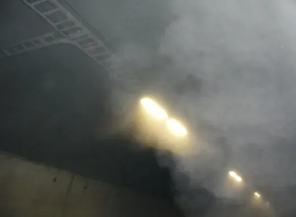
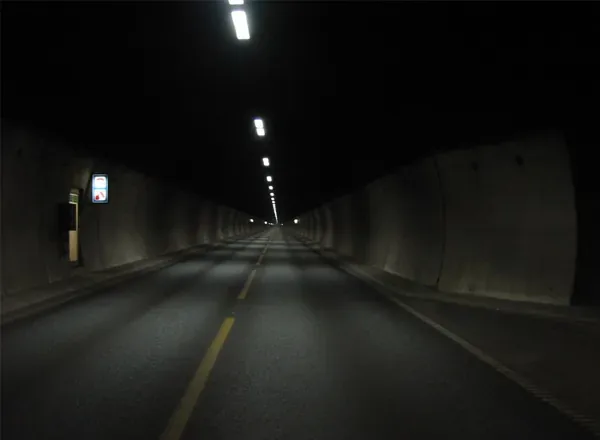
Removing ultrafine engine particles where exposure is highest — inside the tunnel.在暴露浓度最高的隧道内部，直接去除超细发动机颗粒物。
Cleaning air before it leaves the portal. At M30 Madrid, treated air is cleaner than the city's normal air.在排出洞口前完成净化。马德里 M30 项目中，处理后的空气甚至优于城市日常空气质量。
90–98% of particles above 0.1 μm removed, keeping visibility within requirements and reducing accidents.去除 90–98% 的 0.1 μm 以上颗粒，保持能见度达标，降低交通事故风险。
Systems keep working for 20–30 minutes in a fire, removing smoke so people can find the exits and rescuers can enter.火灾时系统可持续运行 20–30 分钟清除烟雾，帮助人员寻找出口、便于救援。
With purification, the exhaust outlet can be just one metre high — blending into the landscape and saving construction cost.配置净化系统后，排风口高度仅需约 1 米，与环境融为一体，并节省土建成本。
Instead of diluting pollution at 25 m/s exit speed, air can leave at about 7 m/s — a major saving on axial-fan energy.无需以 25 m/s 高速稀释排放，出口风速可降至约 7 m/s，大幅降低轴流风机能耗。
Technology核心技术
Polluted tunnel air passes through a sequence of treatment stages and returns to the tunnel clean. Select a stage to see how it works.隧道污染空气依次经过多级处理后洁净回流。点击各环节，了解其工作原理。
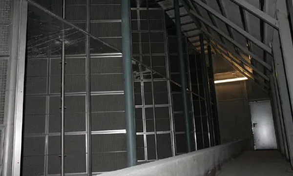
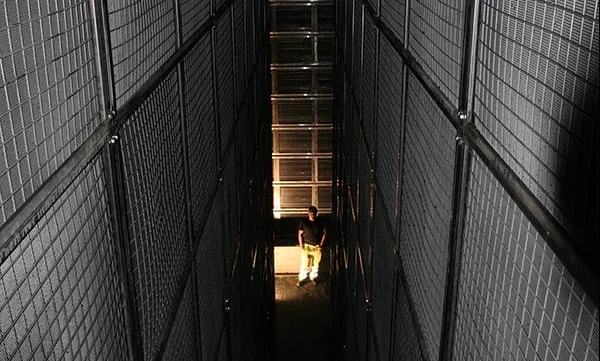
Pre-filters are either panel filters for removing dust, or inertial maze filters with their own fans. As the dust-laden air enters the maze, most of the air changes direction and separates from the dust as it passes through the vanes.预过滤器可选用面板式机械过滤器除尘，或自带风机的惯性迷宫过滤器。含尘空气进入迷宫后，气流在叶片间改变方向，与粉尘分离。
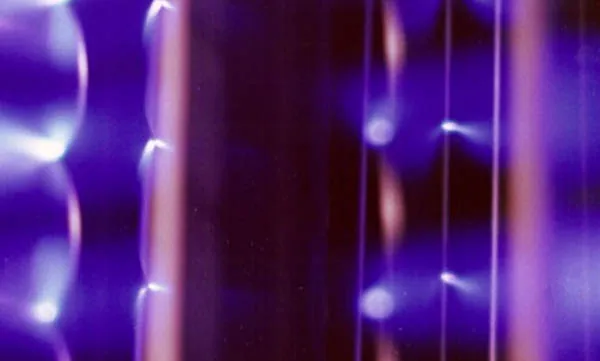
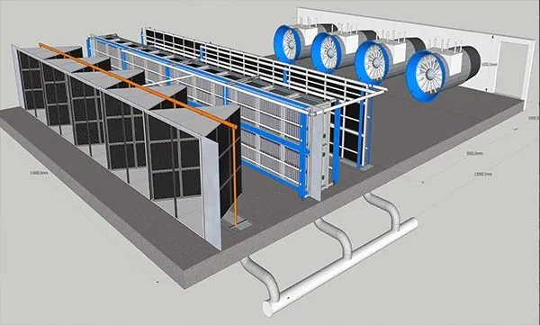
Fine dust passes through a strong electrostatic field generated by CTA's spike ionizer and becomes electrically charged. In the following collector with interleaved plates, charged particles accumulate while clean air passes through with very little pressure drop.细颗粒物经过 CTA 尖端电离器形成的强电场后带电，随后在交错极板收集段中被吸附；洁净空气以极低压降通过。
Cells are built from stainless steel and aluminium in a modular design. The filter array can fill the entire cross-section of the bypass tunnel for maximum efficiency at high velocity.电场单元采用不锈钢与铝材模块化制造，可铺满旁路隧道整个断面，实现高风速下的最高效率。
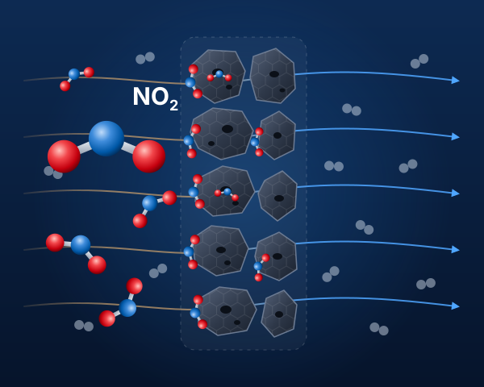
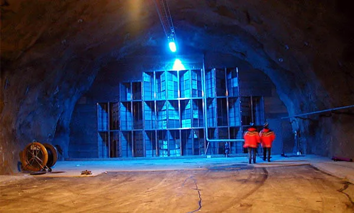
Special activated-carbon filters remove nitrogen dioxide by adsorption — a safe and reliable method that complements particle removal where gas emissions must also be controlled.采用专用活性炭过滤器，通过吸附方式去除二氧化氮，安全可靠；适用于同时需要控制气态污染物的项目。
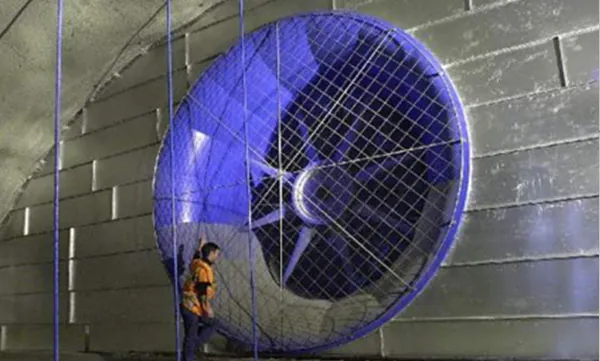
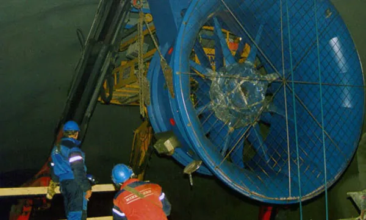
Axial fans draw polluted air from the tunnel into the filter system and return cleaned air to the tunnel. CTA uses very large fans — lowering running cost and giving a more uniform air profile over the filter banks for stable efficiency.轴流风机将污染空气从隧道抽入过滤系统，再将洁净空气送回隧道。CTA 采用超大直径风机，降低运行成本，同时使过滤段气流分布更均匀、效率更稳定。
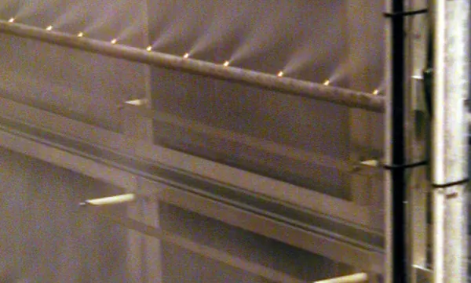
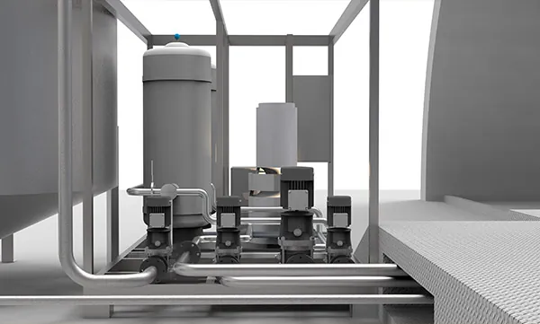
Water and detergent tanks, a pump system, a dosing pump and a distribution network wash the electrostatic filters automatically. CTA supplies its own environmentally friendly detergent. Dirty water goes to a sedimentation tank or is reused through the recycling system.由水箱与清洗剂罐、泵组、计量泵及管路分配系统组成，自动清洗静电过滤器。CTA 自产环保型清洗剂。清洗废水可排入沉淀池，或进入废水循环系统重复利用。
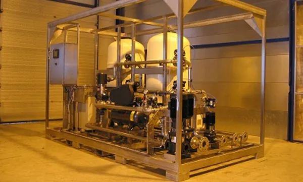
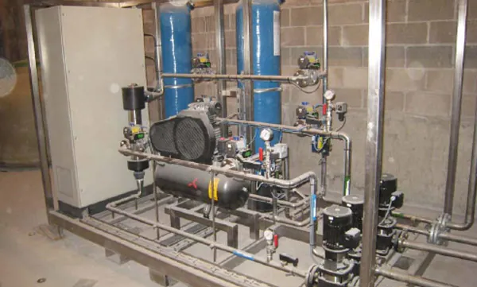
A compact, mechanically simple regeneration package re-circulates the water from the washing process, fully automatic and remotely monitored. Two patented electrolysis units remove all chemicals used during washing.结构紧凑、机械简单的再生装置，对清洗废水进行循环处理，全自动运行并支持远程监控。两套专利电解单元可去除清洗过程中使用的全部化学药剂。
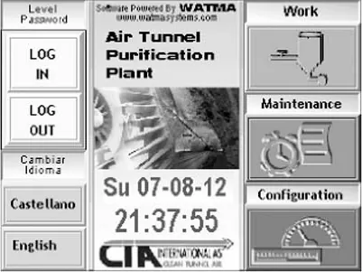
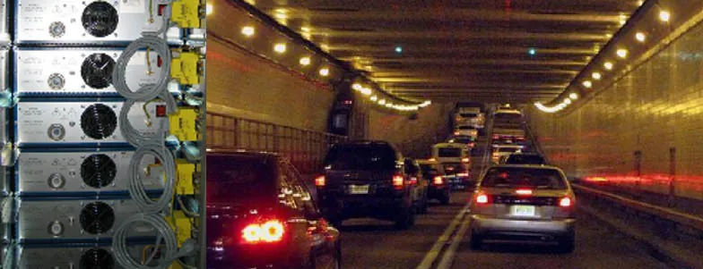
CTA delivers the power-supply cabinets and one main control cabinet with a PLC for all system functions. The automation is simple to use, minimises energy cost and is customised to each operator's needs. CO and visibility monitors can start the system automatically.CTA 提供电源柜及一套主控柜，由 PLC 统一控制全部系统功能。自动化系统操作简便、能耗更低，并可按业主需求定制；CO 与能见度监测仪可自动启动系统。
From feasibility and concept to turnkey delivery and service — our engineers support you at every stage.从可行性研究、方案设计到交钥匙交付与运维，我们的工程团队全程支持。